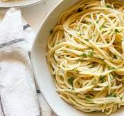

Butter Noodles Recipe

Description
Ingredients
- Fettuccine Noodles or any other noodles 16 ounce dry
- Butter Salted or Unsalted, 1 cup
- Parmesan 1 cup
- Salt and Black pepper to taste
Directions
- Gather all ingredients.
- Fill pot with salted water and bring to a boil.
- Stir in fettuccine, bring back to a boil, and cook pasta over medium heat until tender yet firm. Or, follow package directions.
- Drain and return pasta to pot. Mix butter, parmesan cheese, salt, and pepper into pasta until evenly combined.
- Serve hot and enjoy!